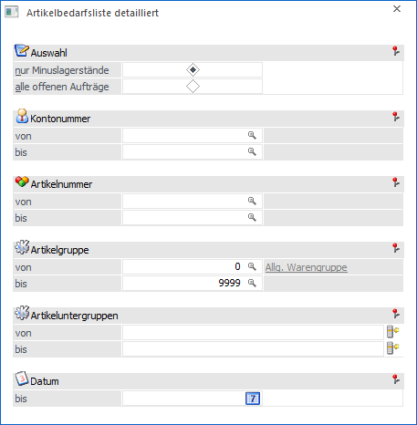
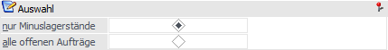
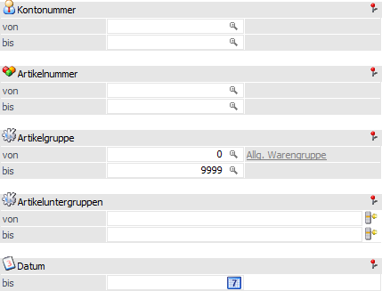
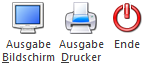

Über den Menüpunkt…
1 WinLine FAKT
1 Einkauf
1 Artikelbedarfsliste detailliert
… kann eine Liste aller offenen Aufträge und Bestellungen ausgegeben werden.
Hinweis
Die Auswertung arbeitet mit einer temporären Tabelle, welche beim Starten des Menüpunktes gefüllt wird. D.h. die Bedarfsliste ist dann ein "Snapshot" der auszuwertenden Daten. Änderungen, welche durchgeführt werden, während das Fenster geöffnet ist, werden in der Auswertung nicht berücksichtigt.

Folgende Eingabefelder und Einstellungen stehen zur Verfügung:
Auswahl

Ø nur Minuslagerstände
Mit dieser Option werden nur die Artikel ausgewertet, die - wenn alle offenen Kundenaufträge und Lieferantenbestellungen berücksichtigt sind - einen negativen Lagerstand ergeben würden.
Ø alle offenen Aufträge
Mit dieser Option werden alle offenen Kundenaufträge und Lieferantenbestellungen ausgewertet.
Selektion

Ø Kontonummer von / bis
Hier können die Kunden bzw. Lieferanten eingeschränkt werden, für welche die Auswertung durchgeführt werden soll.
Ø Artikelnummer von / bis
An dieser Stelle kann eine Einschränkung auf die Artikel, welche ausgewertet werden sollen.
Hinweis
Wird im Feld "Artikel von / bis" z.B. nur eine Artikelnummer eingegeben und dieser Artikel hat auch noch Ausprägungen, so werden alle Ausprägungen automatisch mit angedruckt. Nur wenn während des Anklickens des "Ausgabe-Buttons" die STRG-Taste gedrückt wird, wird nur der Hauptartikel alleine ausgewertet.
Ø Artikelgruppe von / bis
Hier erfolgt die Einschränkung der Artikelgruppen, welche ausgewertet werden sollen. Standardmäßig werden die Gruppen 0 bis 9999 vorbesetzt.
Ø Artikeluntergruppe von / bis
Hier erfolgt die Einschränkung der Artikeluntergruppen, welche ausgewertet werden sollen.
Ø Datum
An dieser Stelle kann die Eingabe eines Stichtages erfolgen, bis zu dem ausgewertet werden soll. Das eingegebene Datum wird mit dem Auftragsdatum aus dem Belegkopf verglichen - und es werden nur jene Belege angezeigt, welche vor diesem Datum liegen. Es erfolgt keine Abprüfung auf das Datum in den Belegzeilen.
Buttons

Ø Ausgabe Bildschirm
Mit Hilfe des Buttons "Ausgabe Bildschirm" oder der Taste F5 wird die Auswertung am Bildschirm ausgegeben.
Ø Ausgabe Drucker
Durch Anwahl des Buttons "Ausgabe Drucker" wird die Auswertung am Drucker ausgegeben.
Ø Ende
Mit Hilfe des Buttons "Ende" bzw. der Taste ESC wird das Fenster geschlossen.
Hinweis
Als Ergebnis wird eine Liste sortiert nach Artikelgruppe und Artikel ausgegeben, in der alle offenen Kundenaufträge und Lieferantenbestellungen aufgelistet werden. In der Spalte "Bestand" wird zuerst der aktuelle Lagerstand angezeigt, in den Folgezeilen wird dann der Bestand angezeigt, welcher sich durch die jeweilige Lieferung ergeben würde.